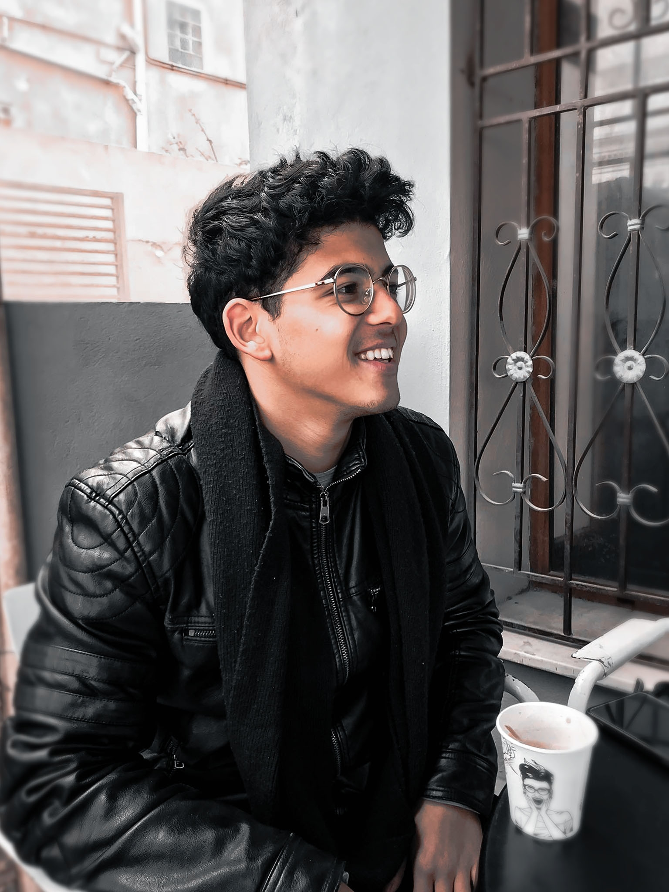

AIESEC est une organisation internationale, entièrement dirigée par des jeunes, non gouvernementale et à but non lucratif. Elle est axée sur le développement personnel des jeunes à travers des opportunités telles que des stages interculturels et des missions de volontariat à l'échelle mondiale, dans lesquels il arrivent à enrichir leurs savoir faire ainsi que leur expériences professionnelles , les habilitant ainsi à influencer positivement la société pour une meilleure Tunisie et pour le monde dans son ensemble.
Bonjour ,
J'espère que vous allez bien, Je me présente, [name] , responsable des Relations Externes de AIESEC in Tunisia-Manar ( AIESEC University )
AIESEC est une organisation internationale entièrement gérée par des jeunes entre 18 et 30 ans. Elle est membre du comité permanent des Nations unies et serait la plus grande organisation estudiantine dans le monde.br
Nous sommes convaincus que votre entreprise pourrait apporter une valeur ajoutée à nos futurs projets et nous proposons, à notre tour, des services et des projets qui pourraient vous intéresser. Pour ce fait, je reste à votre disposition pour convenir d'un rendez-vous le plus tôt possible , ce serait un honneur de pouvoir discuter plus en détails de notre potentiel coopération.
En espérant que vous donnerez une suite favorable à notre demande de collaboration , Je vous prie de recevoir l’assurance de notre considération distinguée. Merci d'avance pour votre disponibilité. Et j'espère que vous ayez le meilleur pour ces journées.
Cordialement ,
J'espère que vous allez bien, Je me présente, [name] , responsable des Relations Externes de AIESEC in Tunisia-Manar ( AIESEC University )
AIESEC est une organisation internationale entièrement gérée par des jeunes entre 18 et 30 ans. Elle est membre du comité permanent des Nations unies et serait la plus grande organisation estudiantine dans le monde.br
Nous sommes convaincus que votre entreprise pourrait apporter une valeur ajoutée à nos futurs projets et nous proposons, à notre tour, des services et des projets qui pourraient vous intéresser. Pour ce fait, je reste à votre disposition pour convenir d'un rendez-vous le plus tôt possible , ce serait un honneur de pouvoir discuter plus en détails de notre potentiel coopération.
En espérant que vous donnerez une suite favorable à notre demande de collaboration , Je vous prie de recevoir l’assurance de notre considération distinguée. Merci d'avance pour votre disponibilité. Et j'espère que vous ayez le meilleur pour ces journées.
Cordialement ,

Mahmoud Ben Ammar
Président du comité d'organisation
+216 55 800 606
Président du comité d'organisation
+216 55 800 606
Mayssa Hemdena
Vice président du relation externe du comité d'organisation
+216 29 580 568
Vice président du relation externe du comité d'organisation
+216 29 580 568